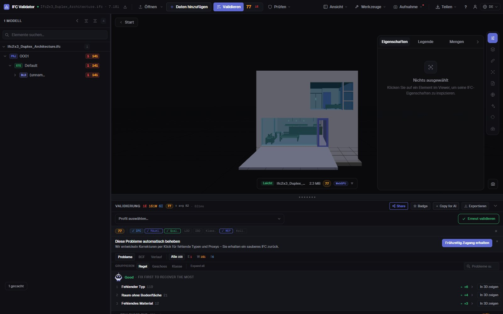
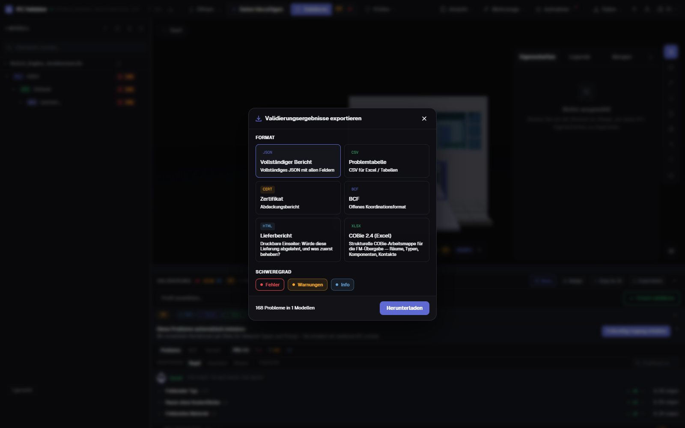

IFC-Modellprüfung
Score und Bericht in 30 s
IFC ablegen und den Health Score von 0 bis 100 nach 44 Qualitätsregeln erhalten — GUIDs, Raumstruktur, Typen, Materialien, Eigenschaftssätze, Koordinaten —, die drei Probleme mit den meisten Punkten zuerst. Danach einen druckbaren Übergabebericht, ein Zertifikat, BCF oder COBie exportieren.
Modell prüfen — kostenlos →Ohne Konto · Kein Upload · Läuft im Browser · Kostenlos

Was Sie tun können
Eine Prüfung, die Sie übergeben können
Eine Zahl für den Bauherrn, die vollständige Liste für den Autor und der Nachweis für die CDE.
Health Score 0–100
Eine Zahl für die Datenqualität des Modells, nach Schwere gewichtet, mit Branchendurchschnitt zum Vergleich.
Was zuerst beheben
Die Regeln mit den meisten Punkten, mit den zurückgewinnbaren Punkten — und einem Knopf, der ihre Elemente in 3D zeigt.
44 Regeln + IDS
GUIDs, Raumhierarchie, verwaiste Elemente, Typen, Materialien, Psets, Einheiten, Koordinaten, Kollisionen — und jede buildingSMART-IDS-Datei.
Druckbarer Übergabebericht
Ein einseitiger HTML-Bericht (würde diese Lieferung abgelehnt, was ist zu beheben), der sich im Browser drucken oder als PDF speichern lässt.
Zertifikat, BCF, COBie
Ein Abdeckungszertifikat, BCF-2.1-Themen für den Autor, CSV/JSON und eine COBie-2.4-Arbeitsmappe.
Kein Upload
Die Prüfung läuft im Browser per WebAssembly. Auch unter NDA, offline und auf jedem Rechner.
Screenshots

FAQ
Häufige Fragen
Was ist eine IFC-Modellprüfung?
Eine automatische Prüfung der Datenqualität einer IFC-Datei: Struktur, Kennungen, Klassifikation, Eigenschaften und Koordinaten. IFC Viewer Online fasst sie in einem Health Score von 0 bis 100 zusammen und listet jedes Problem mit dem betroffenen Element.
Bekomme ich einen Prüfbericht als PDF?
Ja. Den „Übergabebericht“ exportieren: ein druckbarer einseitiger HTML-Bericht mit Score, Problemanzahl und Prioritäten. Öffnen und im Browser drucken oder „Als PDF speichern“. Außerdem JSON-Zertifikat, CSV, BCF und COBie.
Muss ich das IFC-Modell hochladen?
Nein. Anders als Prüfdienste mit Upload wird die Datei im Browser geöffnet und geprüft; sie wird nie an einen Server gesendet.
Was ist ein guter Score?
90–100 ist übergabereif, 75–89 reicht für die Koordination mit kleinen Korrekturen, 50–74 braucht Arbeit vor der Übergabe, unter 50 gibt es ernste Datenprobleme.
Ist das kostenlos?
Ja, für jede Nutzung einschließlich kommerzieller Projekte, ohne Konto und ohne Größenbeschränkung gegen Bezahlung.
Prüfen Sie das Modell, bevor es Ihr Bauherr tut.
Health Score · Prioritäten · Druckbarer Bericht · BCF · COBie
Modell prüfen — kostenlos →